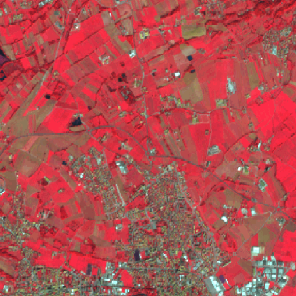

We turn Earth observation research into working software.
Hyperalis Labs develops multimodal and generative geospatial systems, from aligned optical, radar, terrain, and map data to validated raster outputs. We turn research methods into reproducible pipelines ready for integration and handover.
 Aligned multimodal inputs
Aligned multimodal inputs

Cross-modal generation Canopy structure sampling
Canopy structure sampling

Validation and exportWhat we build
The work spans geospatial data engineering, model development, and the tools needed to reproduce, deploy, and maintain the result.
Multimodal EO generation
We develop pipelines that combine aligned optical, radar, terrain, and land-cover data, including workflows that reconstruct or generate missing modalities.
Generative geospatial models
We build conditional models for canopy and related structure rasters. Repeated sampling and uncertainty analysis show where the data supports more than one plausible output.
Research-to-production engineering
We package data loaders, configuration, training, checkpoints, validation, and inference or export tools into workflows that another engineering team can maintain.
How the work is delivered
Each project starts by defining the sensor inputs, target output, spatial alignment rules, and evaluation plan. That shared specification keeps model work focused on the operational goal.
Ways to work with us
Engagements range from a short feasibility study to the handover of an operational workflow.
Feasibility study
Assess the available data, establish a baseline, and test the central technical assumption before committing to a larger build.
Focused pilot
Implement and validate a scoped workflow on representative data, with clear success criteria and documented limitations.
Production handover
Harden the pipeline, connect it to the intended environment, and transfer the code, configuration, and operating knowledge to your team.
Have an Earth observation problem to solve?
Book a meeting to discuss the goal, available data, operating constraints, and a sensible first step.
Book a meeting